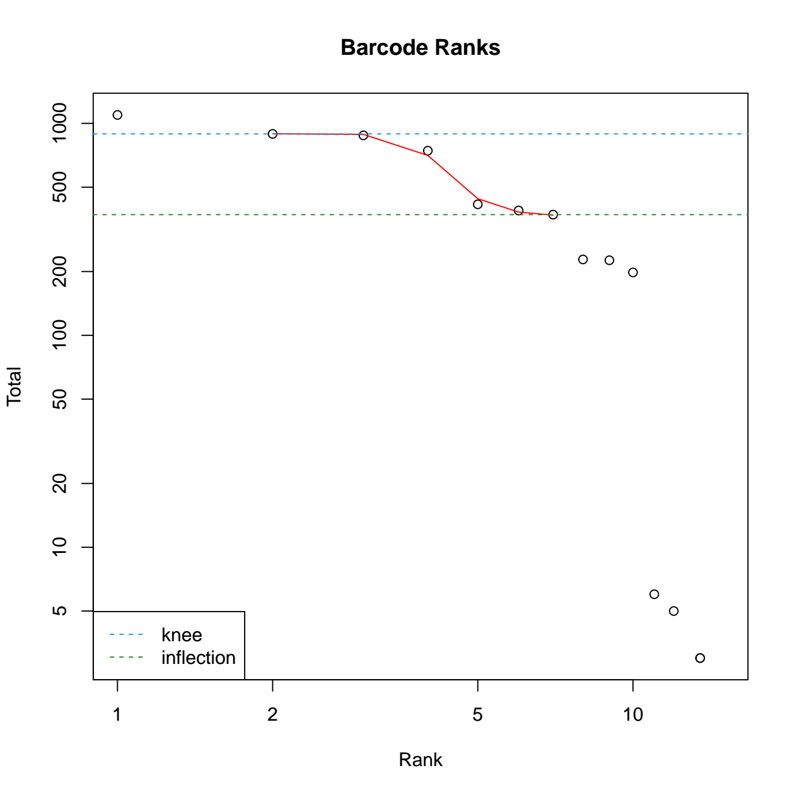
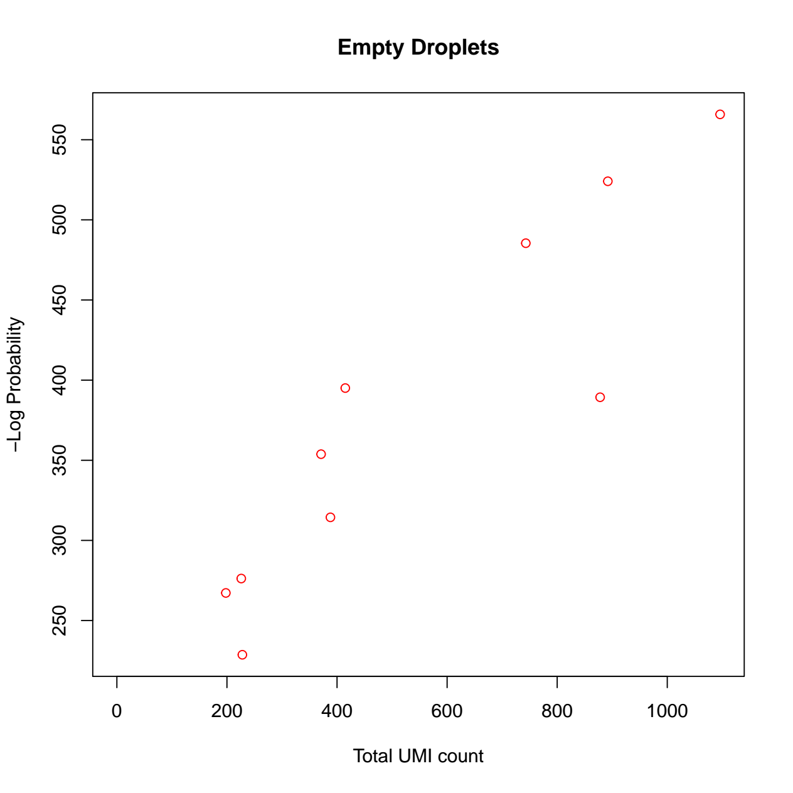
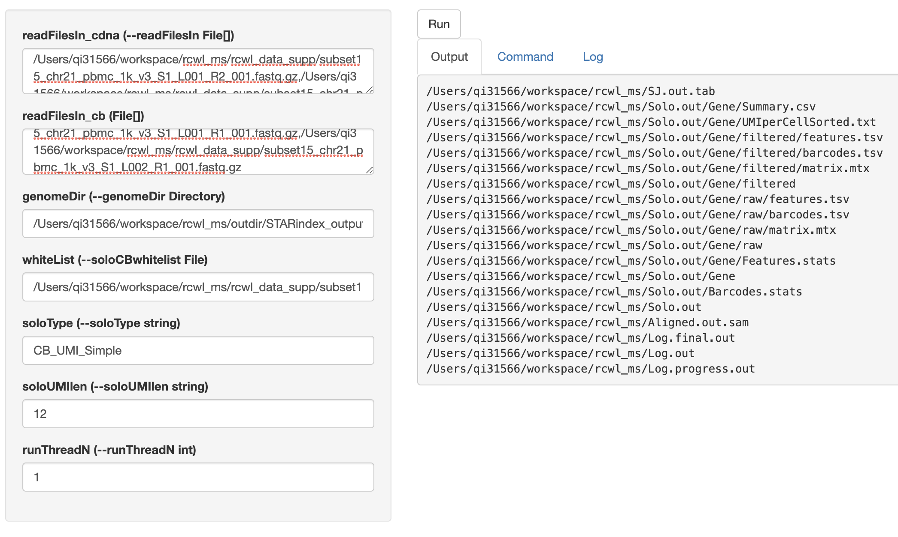

rcwl_scrnaseq.RmdHere we demonstrate a case study for scRNA-seq data preprocessing using RcwlPipeline tools and pipeline.
10x Genomics has its own preprocessing pipeline Cell Ranger to process the scRNA-seq outputs it produces to perform the demultiplexing and quantification. However, it requires much configuration to run and is significantly slower than other mappers.
In this case study, STARsolo is used for alignment and quantification, which produces a count matrix from FASTQ. DropletUtils is used for filtering raw gene-barcode matrix and removing empty droplets, which produces a high-quality count matrix with feature/cell annotation files saved in an R object of SingleCellExperiment. Before these, a one-time indexing step using STARindex is also included in this case study.
If this is the first time you use Rcwl or RcwlPipelines, you need to install the packages:
The package can be installed from Bioconductor (>= 3.9):
if (!requireNamespace("BiocManager", quietly = TRUE))
install.packages("BiocManager")
BiocManager::install(c("Rcwl", "RcwlPipelines"))Or use the most updated version from GitHub:
For this workshop, we also need to install some other packages:
Load the packages:
The scRNA-seq data source is the 1k PBMCs from 10x genomics (These source files are provided in the Zenodo data repository).
The dataset used in this tutorial are sub-sampled from the source files to contain only 15 cells instead of 1000. The data curation is for demo purpose only so that the execution of the Rcwl scRNA-seq preprocessing tools or pipeline in R can be completed within 1~2 minutes.
The "*.fastq" data was curated to only include reads on chromosome 21.
“subset15_demo_barcode.txt” contains known cell barcodes for mapping and only 15 barcodes are included.
“Homo_sapiens.GRCh37.75.21.gtf” contains the hg19 GTF file to annotate reads, which was curated on chromosome 21 only.
Data can be loaded from the dedicated GitHub repository or the Zenodo data repository.
clone("https://github.com/rworkflow/testdata", "rcwl_data_supp")
path <- "rcwl_data_supp" ## source data
dir(path)## [1] "chr21.fa"
## [2] "Homo_sapiens.GRCh37.75.21.gtf"
## [3] "subset15_chr21_pbmc_1k_v3_S1_L001_R1_001.fastq.gz"
## [4] "subset15_chr21_pbmc_1k_v3_S1_L001_R2_001.fastq.gz"
## [5] "subset15_chr21_pbmc_1k_v3_S1_L002_R1_001.fastq.gz"
## [6] "subset15_chr21_pbmc_1k_v3_S1_L002_R2_001.fastq.gz"
## [7] "subset15_demo_barcode.txt"Here we also create an output directory to save result files from running the tool/pipeline.
outpath <- "outdir"
dir.create(outpath, showWarnings = FALSE)Three core functions: cwlUpdate, cwlSearch and cwlLoadfrom RcwlPipelines will be needed for updating, searching, and loading the needed tools or pipelines in R.
The cwlUpdate function syncs the current Rcwl recipes and returns a cwlHub object which contains the most updated Rcwl recipes. The mcols() function returns all related information about each available tool or pipeline. The recipes will be locally cached, so users don’t need to call cwlUpdate every time unless they want to use a tool/pipeline that is newly added to RcwlPipelines.
In this example, we are using the Bioc 3.13 which is the current devel version.
atls <- cwlUpdate(branch = "dev") ## sync the tools/pipelines.
atls## cwlHub with 140 records
## cache path: ~/Library/Caches/Rcwl
## # last modified date: 2021-02-22
## # cwlSearch() to query scripts
## # cwlLoad('title') to load the script
## # additional mcols(): rid, rpath, Type, Container, mtime, ...
##
## title
## BFC3498 | pl_alignMerge
## BFC3499 | pl_AnnPhaseVcf
## BFC3500 | pl_BaseRecal
## BFC3501 | pl_bwaAlign
## BFC3502 | pl_bwaMMRecal
## ... ...
## BFC3633 | tl_VarScan2
## BFC3634 | tl_vcf_expression_annotator
## BFC3635 | tl_vcf_readcount_annotator
## BFC3636 | tl_vep
## BFC3637 | tl_vt_decompose
## Command
## BFC3498 bwaAlign+mergeBamDup
## BFC3499 VCFvep+dVCFcoverage+rVCFcoverage+VCFexpression+PhaseVcf
## BFC3500 BaseRecalibrator+ApplyBQSR+samtools_index+samtools_flagstat+samt...
## BFC3501 bwa+sam2bam+sortBam+idxBam
## BFC3502 bwaAlign+mergeBamDup+BaseRecal
## ... ...
## BFC3633
## BFC3634 vcf-expression-annotator
## BFC3635 vcf-readcount-annotator
## BFC3636 vep
## BFC3637 vt decompose
table(mcols(atls)$Type)##
## pipeline tool
## 26 113cwlSearch is used to search for specific tools/pipelines of interest. Multiple keywords can be used for an internal search of “rname”, “rpath”, “fpath”, “Command” and “Containers” columns in the mcols().
## DataFrame with 2 rows and 14 columns
## rid rname create_time access_time
## <character> <character> <character> <character>
## 1 BFC3515 pl_rnaseq_Sf 2021-03-05 05:34:02 2021-03-05 05:34:02
## 2 BFC3618 tl_STARindex 2021-03-05 05:34:16 2021-03-05 05:34:16
## rpath rtype fpath last_modified_time
## <character> <character> <character> <numeric>
## 1 /Users/qi31566/Libra.. local /Users/qi31566/Libra.. NA
## 2 /Users/qi31566/Libra.. local /Users/qi31566/Libra.. NA
## etag expires Type Command
## <character> <numeric> <character> <character>
## 1 NA NA pipeline fastqc+STAR+sortBam+..
## 2 NA NA tool STAR
## Container mtime
## <character> <character>
## 1 NA 2021-02-22 14:45:16
## 2 quay.io/biocontainer.. 2021-02-22 14:45:16cwlLoad loads the Rcwl tool/pipeline into the R working environment. Here we load all the 3 tools that will be needed for the scRNA-seq data preprocessing. The recipes for developing these tools can be found in the GitHub repository including tl_STARindex, tl_STARsolo, and tl_DropletUtils.
Before read alignment and quality control, a one-time genome indexing needs to be done. The command line using STAR will look like this:
$ STAR --runMode genomeGenerate --runThreadN 4 --genomeDir STARindex
--genomeFastaFiles chr21.fa --sjdbGTFfile Homo_sapiens.GRCh37.75.21.gtfWe can equivalently index the genome using the Rcwl tool of STARindex within R, which was internally passed as cwl scripts, by only assigning values to the input parameters, and execute the cwl script using one of the execution functions, e.g., runCWL in the local computer. Then the output files are ready to pass as input to the next tool for single cell read alignment.
Assign values to the input parameters:
STARindex$genomeFastaFiles <- file.path(path, "chr21.fa")
STARindex$sjdbGTFfile <- file.path(path, "Homo_sapiens.GRCh37.75.21.gtf")## [1] "STARindex/chrLength.txt" "STARindex/chrName.txt"
## [3] "STARindex/chrNameLength.txt" "STARindex/chrStart.txt"
## [5] "STARindex/exonGeTrInfo.tab" "STARindex/exonInfo.tab"
## [7] "STARindex/geneInfo.tab" "STARindex/Genome"
## [9] "STARindex/genomeParameters.txt" "STARindex/Log.out"
## [11] "STARindex/SA" "STARindex/SAindex"
## [13] "STARindex/sjdbInfo.txt" "STARindex/sjdbList.fromGTF.out.tab"
## [15] "STARindex/sjdbList.out.tab" "STARindex/transcriptInfo.tab"Note that the docker argument in runCWL function takes 4 values:
Assign values to input parameters:
cdna.fastq <- file.path(path, list.files(path, pattern = "_R2_"))
cb.fastq <- file.path(path, list.files(path, pattern = "_R1_"))
cblist <- file.path(path, "subset15_demo_barcode.txt")
genomeDir <- file.path(outpath, "STARindex_output/STARindex")
inputs(STARsolo)## inputs:
## readFilesIn_cdna (File[]): --readFilesIn
## readFilesIn_cb (File[]):
## genomeDir (Directory): --genomeDir
## whiteList (File): --soloCBwhitelist
## soloType (string): --soloType CB_UMI_Simple
## soloUMIlen (string): --soloUMIlen 12
## runThreadN (int): --runThreadN 1
STARsolo$readFilesIn_cdna <- cdna.fastq
STARsolo$readFilesIn_cb <- cb.fastq
STARsolo$whiteList <- cblist
STARsolo$genomeDir <- genomeDir## [1] "Aligned.out.sam" "Log.final.out"
## [3] "Log.out" "Log.progress.out"
## [5] "SJ.out.tab" "Solo.out/Barcodes.stats"
## [7] "Solo.out/Gene/Features.stats" "Solo.out/Gene/filtered/barcodes.tsv"
## [9] "Solo.out/Gene/filtered/features.tsv" "Solo.out/Gene/filtered/matrix.mtx"
## [11] "Solo.out/Gene/raw/barcodes.tsv" "Solo.out/Gene/raw/features.tsv"
## [13] "Solo.out/Gene/raw/matrix.mtx" "Solo.out/Gene/Summary.csv"
## [15] "Solo.out/Gene/UMIperCellSorted.txt"The output files generated in the “STARsolo_output” folder can now be passed into the next tool for QC.
To get a high-quality count matrix we apply the DropletUtils Bioconductor package, which will produce a filtered dataset that is more representative of the Cell Ranger pipeline.
Since CWL itself doesn’t support the integration of R packages or R function, this is a unique feature for Rcwl, where we can easily connect the upstream data preprocessing steps (previously based on command line tools) and the downstream data analysis steps (heavily done in R/Bioconductor).
The idea here is to put anything you need into a user-defined R function, with specified arguments for input and output files, then it’s ready to be wrapped as an Rcwl tools for execution.
For example, in wrapping the Bioconductor package DropletUtils functionalities, we wrote this Rcwl tool called tl_DropletUtils with 3 major steps: 1) use the read10xCounts function to read the raw aligned files and convert into a SingleCellExperiment object. 2) calculate the barcode ranks and plotting. 3) calculate the empty droplets and plotting. We have also defined the tool output to collect the SingleCellExperiment Rdata file and diagnostic figures pdf file.
## inputs:
## dirname (Directory): dir.name=
## lower (int): lower= 100
## df (int): df= 20
DropletUtils$dirname <- file.path(outpath, "STARsolo_output/Solo.out")
DropletUtils$lower <- 100
DropletUtils$df <- 5## [1] "diagnostics.pdf" "sce_filtered.rds"Now that we get 2 output files:

SingleCellExperiment object which has filtered out unqualified cells and is analysis ready.## class: SingleCellExperiment
## dim: 736 10
## metadata(1): Samples
## assays(1): counts
## rownames(736): ENSG00000238411 ENSG00000264462 ... ENSG00000230982
## ENSG00000212932
## rowData names(3): ID Symbol Type
## colnames: NULL
## colData names(2): Sample Barcode
## reducedDimNames(0):
## altExpNames(0):Alternatively and more easily, we can use the pipeline called pl_STARsoloDropletUtils (recipe here) for the scRNA-seq data preprocessing. This pipeline integrated the STARsolo and DropletUtils for a streamlined preprocessing analysis within R. It is included in RcwlPipelines and is ready to be customized for your own research. Pipelines can be visualized by the plotCWL function.
STARsoloDropletUtils <- cwlLoad("pl_STARsoloDropletUtils")
plotCWL(STARsoloDropletUtils)For Rcwl pipelines, we only need to assign input values for the whole pipeline, not individual tools involved. The input and output between each step are pre-defined in the pipeline to ensure a smooth passing.
inputs(STARsoloDropletUtils)## inputs:
## fastq_cdna (File[]):
## fastq_cb (File[]):
## genomeDir (Directory):
## whiteList (File):
## runThreadN (int):
STARsoloDropletUtils$fastq_cdna <- cdna.fastq
STARsoloDropletUtils$fastq_cb <- cb.fastq
STARsoloDropletUtils$genomeDir <- file.path(outpath, "STARindex_output/STARindex")
STARsoloDropletUtils$whiteList <- cblist
STARsoloDropletUtils$runThreadN <- 1The overall output of the pipeline was pre-defined to glob the important files from separate steps.
outputs(STARsoloDropletUtils)## outputs:
## sam:
## type: File
## outputSource: STARsolo/outAlign
## Solo:
## type: Directory
## outputSource: STARsolo/Solo
## sce:
## type: File
## outputSource: DropletUtils/outsce
## plots:
## type: File
## outputSource: DropletUtils/plots## [1] "Aligned.out.sam" "diagnostics.pdf"
## [3] "sce_filtered.rds" "Solo.out/Barcodes.stats"
## [5] "Solo.out/Gene/Features.stats" "Solo.out/Gene/filtered/barcodes.tsv"
## [7] "Solo.out/Gene/filtered/features.tsv" "Solo.out/Gene/filtered/matrix.mtx"
## [9] "Solo.out/Gene/raw/barcodes.tsv" "Solo.out/Gene/raw/features.tsv"
## [11] "Solo.out/Gene/raw/matrix.mtx" "Solo.out/Gene/Summary.csv"
## [13] "Solo.out/Gene/UMIperCellSorted.txt"STARsolo
Powered by BiocParallel,Rcwl supports parallel job running for multiple samples using the runCWLBatch function. The following example demonstrates how to do the parallel alignment for the 2 samples using the STARsolo tool.
The BPPARAM argument in runCWLBatch() defines the parallel parameters. It can be defined by BiocParallel::BatchtoolsParam function, where the cluster argument takes different values for different cluster job manager, such as “multicore”, “sge” and “slurm”. More details about available options can be checked by ?BiocParallel::BatchtoolsParam.
bpparam <- BatchtoolsParam(workers = 2, cluster = "sge",
template = batchtoolsTemplate("sge"))In the following example, we are using “multicore” for the parallel running.
The inputList argument is required to be a list of input parameter values for samples that are to be computed parallelly. NOTE that the names of the list must be consistent with the ids of input parameters. In this example, the names are readFilesIn_cdna and readFilesIn_cb.
The paramList argument is required to be a list of input parameter values that are to be shared for all parallelly running samples.
bpparam <- BatchtoolsParam(workers = 2, cluster = "multicore")
input_lst <- list(readFilesIn_cdna = list(
sample1 = cdna.fastq,
sample2 = cdna.fastq),
readFilesIn_cb = list(
sample1 = cb.fastq,
sample2 = cb.fastq)
)
param_lst <- list(whiteList = cblist,
genomeDir = genomeDir,
runThreadN = 2)
res <- runCWLBatch(cwl = STARsolo,
outdir = file.path(outpath, "STARsolo_batch_output"),
inputList = input_lst, paramList = param_lst,
BPPARAM = bpparam)The results are saved in separate folders for each parallel sample.
## [1] "sample1/Aligned.out.sam"
## [2] "sample1/Log.final.out"
## [3] "sample1/Log.out"
## [4] "sample1/Log.progress.out"
## [5] "sample1/SJ.out.tab"
## [6] "sample1/Solo.out/Barcodes.stats"
## [7] "sample1/Solo.out/Gene/Features.stats"
## [8] "sample1/Solo.out/Gene/filtered/barcodes.tsv"
## [9] "sample1/Solo.out/Gene/filtered/features.tsv"
## [10] "sample1/Solo.out/Gene/filtered/matrix.mtx"
## [11] "sample1/Solo.out/Gene/raw/barcodes.tsv"
## [12] "sample1/Solo.out/Gene/raw/features.tsv"
## [13] "sample1/Solo.out/Gene/raw/matrix.mtx"
## [14] "sample1/Solo.out/Gene/Summary.csv"
## [15] "sample1/Solo.out/Gene/UMIperCellSorted.txt"
## [16] "sample2/Aligned.out.sam"
## [17] "sample2/Log.final.out"
## [18] "sample2/Log.out"
## [19] "sample2/Log.progress.out"
## [20] "sample2/SJ.out.tab"
## [21] "sample2/Solo.out/Barcodes.stats"
## [22] "sample2/Solo.out/Gene/Features.stats"
## [23] "sample2/Solo.out/Gene/filtered/barcodes.tsv"
## [24] "sample2/Solo.out/Gene/filtered/features.tsv"
## [25] "sample2/Solo.out/Gene/filtered/matrix.mtx"
## [26] "sample2/Solo.out/Gene/raw/barcodes.tsv"
## [27] "sample2/Solo.out/Gene/raw/features.tsv"
## [28] "sample2/Solo.out/Gene/raw/matrix.mtx"
## [29] "sample2/Solo.out/Gene/Summary.csv"
## [30] "sample2/Solo.out/Gene/UMIperCellSorted.txt"cwlShiny() opens a user-friendly shiny interface for running any Rcwl tools or pipelines. By default, users need to put in the absolute file path for each input parameter. NOTE, multiple file paths need to be separated by colon. Click the run button, it will start running and return the output file paths under Output tag. Users can also check the Command and Log in the shiny interface page.
cwlShiny(STARsolo)
## R version 4.0.3 (2020-10-10)
## Platform: x86_64-apple-darwin13.4.0 (64-bit)
## Running under: macOS Catalina 10.15.7
##
## Matrix products: default
## BLAS/LAPACK: /Users/qi31566/miniconda3/envs/r-base/lib/libopenblasp-r0.3.12.dylib
##
## locale:
## [1] en_US.UTF-8/en_US.UTF-8/en_US.UTF-8/C/en_US.UTF-8/en_US.UTF-8
##
## attached base packages:
## [1] parallel stats4 stats graphics grDevices utils datasets
## [8] methods base
##
## other attached packages:
## [1] BiocParallel_1.24.1 DropletUtils_1.10.3
## [3] SingleCellExperiment_1.12.0 SummarizedExperiment_1.20.0
## [5] Biobase_2.50.0 GenomicRanges_1.42.0
## [7] GenomeInfoDb_1.26.2 IRanges_2.24.1
## [9] MatrixGenerics_1.2.1 matrixStats_0.58.0
## [11] git2r_0.28.0 RcwlPipelines_1.7.7
## [13] BiocFileCache_1.14.0 dbplyr_2.1.0
## [15] Rcwl_1.7.12 S4Vectors_0.28.1
## [17] BiocGenerics_0.36.0 yaml_2.2.1
##
## loaded via a namespace (and not attached):
## [1] ellipsis_0.3.1 rprojroot_2.0.2
## [3] scuttle_1.0.4 XVector_0.30.0
## [5] fs_1.5.0 rstudioapi_0.13
## [7] bit64_4.0.5 fansi_0.4.2
## [9] sparseMatrixStats_1.2.1 codetools_0.2-18
## [11] R.methodsS3_1.8.1 cachem_1.0.4
## [13] knitr_1.31 jsonlite_1.7.2
## [15] R.oo_1.24.0 shiny_1.6.0
## [17] HDF5Array_1.18.1 DiagrammeR_1.0.6.1
## [19] compiler_4.0.3 httr_1.4.2
## [21] dqrng_0.2.1 basilisk_1.2.1
## [23] backports_1.2.1 assertthat_0.2.1
## [25] Matrix_1.3-2 fastmap_1.1.0
## [27] limma_3.46.0 later_1.1.0.1
## [29] visNetwork_2.0.9 htmltools_0.5.1.1
## [31] prettyunits_1.1.1 tools_4.0.3
## [33] igraph_1.2.6 glue_1.4.2
## [35] GenomeInfoDbData_1.2.4 dplyr_1.0.4
## [37] batchtools_0.9.15 rappdirs_0.3.3
## [39] Rcpp_1.0.6 jquerylib_0.1.3
## [41] pkgdown_1.6.1 vctrs_0.3.6
## [43] rhdf5filters_1.2.0 DelayedMatrixStats_1.12.3
## [45] xfun_0.21 stringr_1.4.0
## [47] beachmat_2.6.4 mime_0.10
## [49] lifecycle_1.0.0 edgeR_3.32.1
## [51] zlibbioc_1.36.0 basilisk.utils_1.2.2
## [53] ragg_1.1.0 hms_1.0.0
## [55] promises_1.2.0.1 rhdf5_2.34.0
## [57] RColorBrewer_1.1-2 curl_4.3
## [59] memoise_2.0.0 reticulate_1.18
## [61] sass_0.3.1 stringi_1.5.3
## [63] RSQLite_2.2.3 highr_0.8
## [65] desc_1.2.0 checkmate_2.0.0
## [67] filelock_1.0.2 rlang_0.4.10
## [69] pkgconfig_2.0.3 systemfonts_1.0.1
## [71] bitops_1.0-6 evaluate_0.14
## [73] lattice_0.20-41 purrr_0.3.4
## [75] Rhdf5lib_1.12.1 htmlwidgets_1.5.3
## [77] bit_4.0.4 tidyselect_1.1.0
## [79] magrittr_2.0.1 R6_2.5.0
## [81] generics_0.1.0 base64url_1.4
## [83] DelayedArray_0.16.1 DBI_1.1.1
## [85] pillar_1.5.0 withr_2.4.1
## [87] RCurl_1.98-1.2 tibble_3.0.6
## [89] crayon_1.4.1 utf8_1.1.4
## [91] rmarkdown_2.7 progress_1.2.2
## [93] locfit_1.5-9.4 grid_4.0.3
## [95] data.table_1.14.0 blob_1.2.1
## [97] digest_0.6.27 xtable_1.8-4
## [99] tidyr_1.1.2 httpuv_1.5.5
## [101] brew_1.0-6 R.utils_2.10.1
## [103] textshaping_0.3.1 bslib_0.2.4